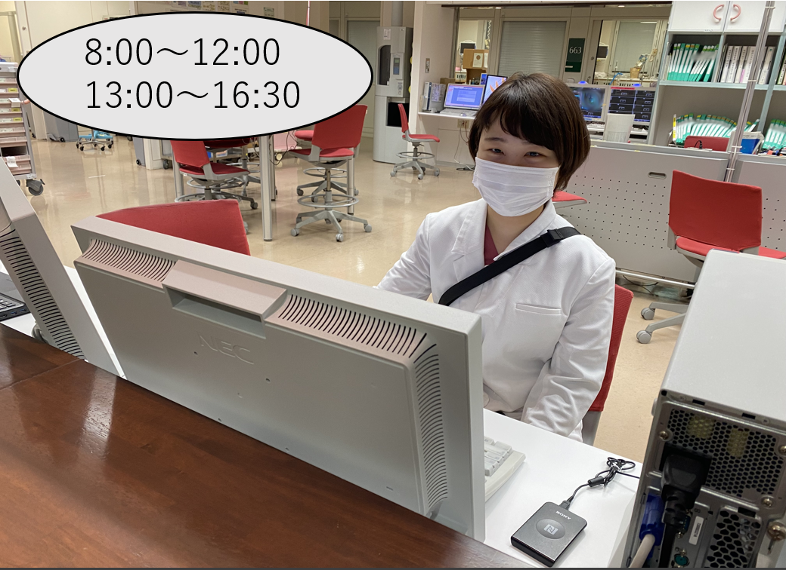
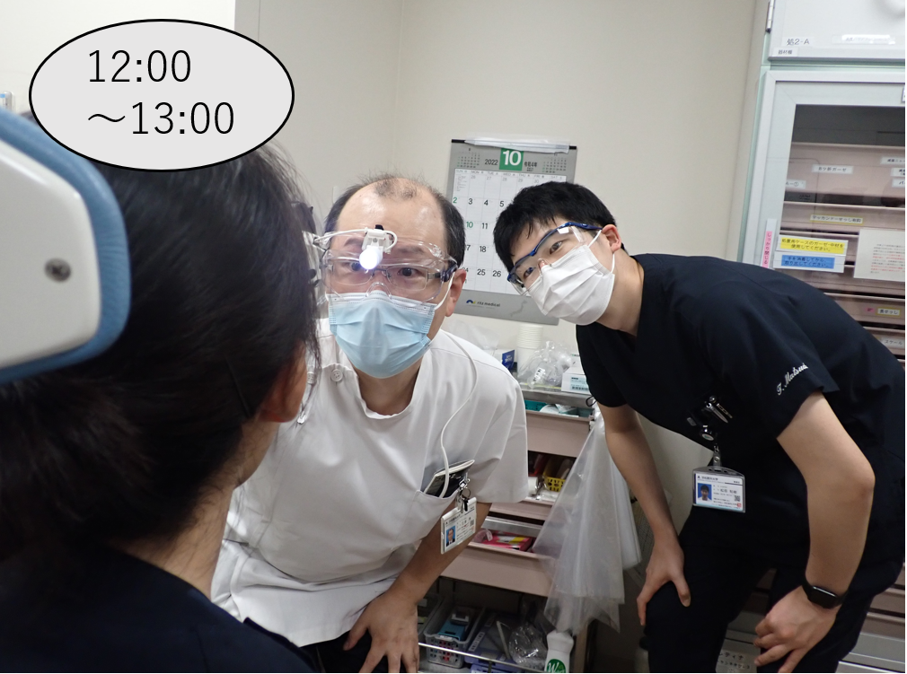
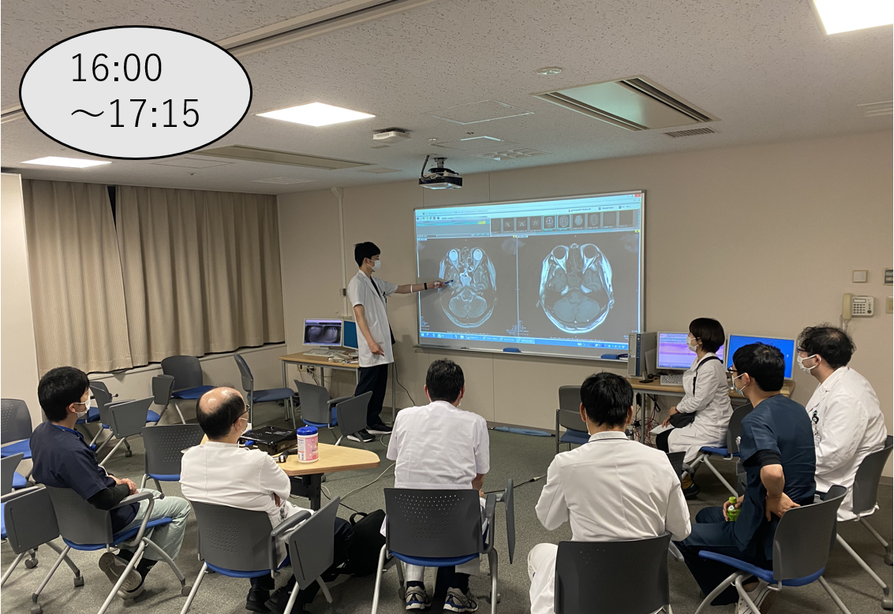
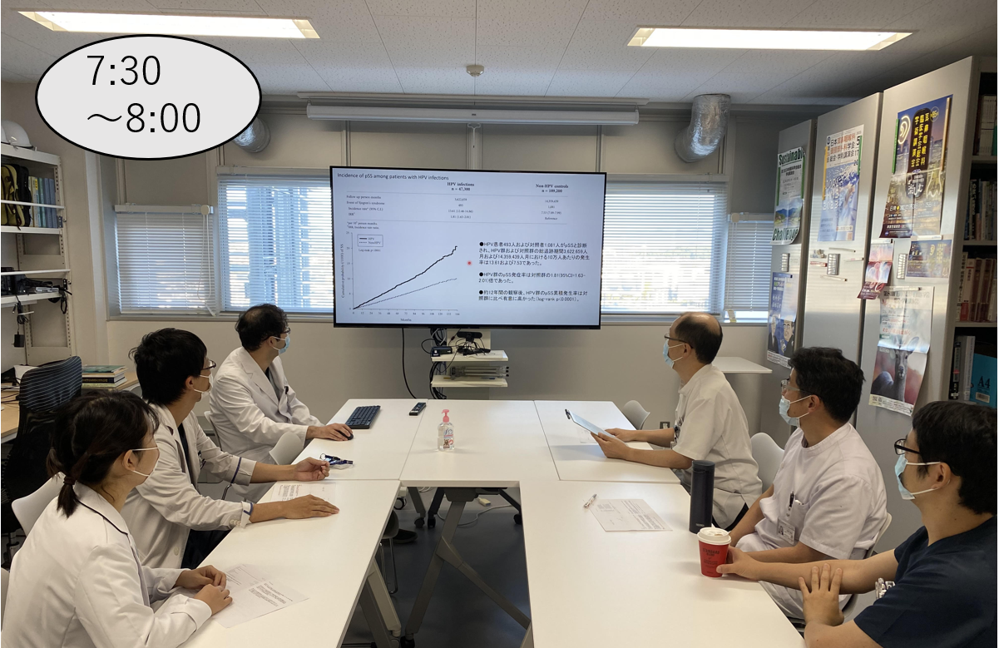
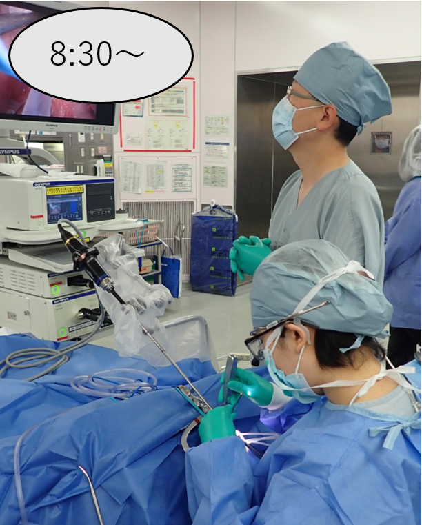

大学病院での研修・1日の流れ
浜松医科大学医学部附属病院での臨床研修スケジュールと、
専攻医・研修医の1日の過ごし方をご紹介します。
週間スケジュール
本院における基本的な1週間のスケジュールです。外来、手術、各種カンファレンスがバランスよく配置されています。
手術のない1日の流れ (月曜日)
手術の予定がない日の研修例です。病棟管理、教授回診、および各種カンファレンスが中心となります。

＜病棟診療＞
指導医の先生と受け持っている患者さんや担当患者さんの診察、処方、治療計画の作成などを行います。

＜教授回診＞
教授から診療におけるアドバイスや教育的な指導を受け、治療方針の確認を行います。

＜耳鼻科カンファレンス＞
入院患者さん、他院からの専門外来への紹介症例、手術症例についてのディスカッションを行います。
手術日の1日の流れ (金曜日)
手術日における研修例です。朝の抄読会で論文の知見を共有したあと、上級医の指導のもとで手術に入ります。

＜抄読会＞
抄読会では最新の海外・国内論文の知見を読み合わせ、知識のアップデートおよび共有を行います。

＜手術＞
上級医の先生と手術を行います。常に安全に配慮し、上級医の指導を直接受けられる体制となっています。